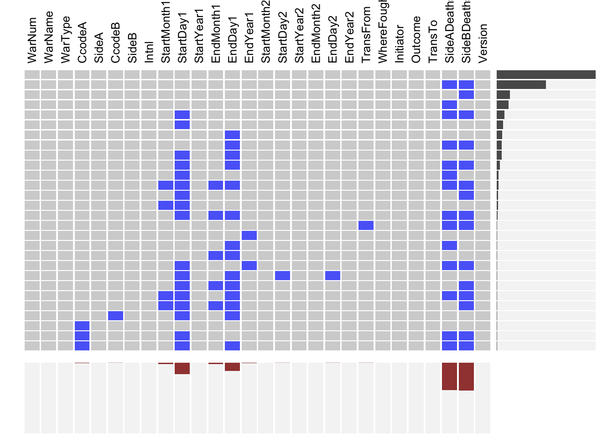
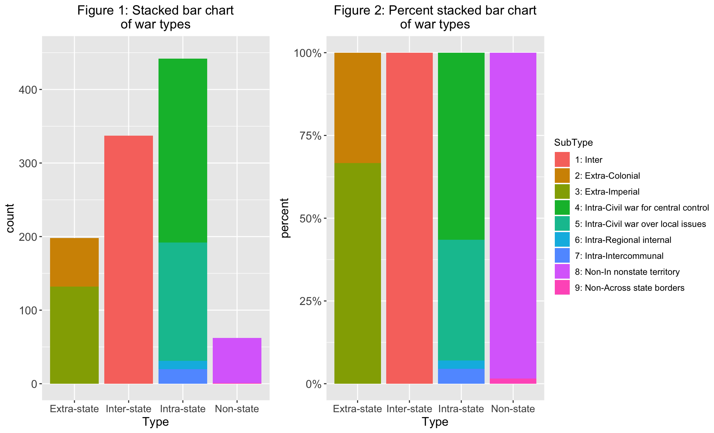

Chapter 5 Results
Provide a short nontechnical summary of the most revealing findings of your analysis written for a nontechnical audience. Take extra care to clean up your graphs, ensuring that best practices for presentation are followed, as described in the audience ready style section below.
5.1 Number of wars by type
In the first place, we are interested in what types of wars happened most frequently in that the original data sets are divided into 4 types: intra-state, inter-state, extra-state, and non-state wars. It is observed from Figure 1 that there are most intra-state wars with number over 400, and then inter-state wars, extra-state wars with non-state wars are the least. Considering that the scale of inter-state wars is usually larger than scale of intra-state wars, the larger number of intra-state wars is expected and non-state wars are not very common with least occurences. In addition, according to Figure 2 and definitions of wars types, we found that:
- Within extra-state wars, there are two thrids of extra-state wars are imperial and one third of extra-state wars are colonial.
- All inter-state wars only have one type as inter-state.
- More than hald of the intra-state wars are civil wars for central control, while 40% are civil wars for local issues. In terms of the remaining intr-state wars, there are approximately twice intercommunal wars as regional internal wars.
- Among all non-state wars, the majority wars happened in non-state territories while little were cross state borders (actually there was one).

5.2 Number of wars by state
It is also interesting to explore what states participated most frequently in the wars, either actively or passively. For this question, we do not take non-state wars into consideration because non-state wars are not about state or countries. For Figure 3, after combining intra-state, extra-state and inter-state wars by state name, there are 160 states (rows) in total and we picked the first 80 states that were ever involved in the wars most frequently, to make cleveland plots more clear. Based on Figure 3, United Kingdom, France, China, Russia, and Ottoman Empire were involved in the wars more frequently, which is not exceptional considering these states’ history and size. In addition, the numbers of wars in which United Kingdom and France participated are far more than that of remaining states.

When we look into each war type, there is new information based on Figure 4, Figure 5, and Figure 6. United Kingdom only appeared to be most involved in extra-state wars, which is resonable in terms of its colonization before 19th century. France and Spain rank second and thrid for participating in extra-state wars as states that developed in the First Industrial Revolution and seeked colonial expansion. China has most intra-state wars with Ottoman Empire and Russia rank as second and third, which may be related to state’s larger population and longer history. Finally, France, United States of America, and United Kingkom have been involved in most inter-state wars. There is another point worth notice that are much more intra-state and inter-state wars than extra-state wars for each state, corresponding to the findings in Figure 1.

5.3 Number of war deaths
A part we can never ignore about wars is the number of deaths caused. For this project, we only demonstrate the number of battle deaths [may need to be defined again here as a reminder to audience].
We first explored which war type caused the most number of battle deaths and it can be observed from Figure 7 the war type is inter-state wars, with a number over 30 million standing out among all other types.
Now please think of one war in history that you believe caused most battle deaths and scroll down to Figure 8 to check your answer.
Notice that we took log of the number of battle deaths due to the large number. The two wars with most humanity losses are World War II and World War I and the number of deaths for World War II (over 16.5 million) is almost twice of the number for World War I (about 8 million). This might be one of the reasons that these are the two most famous wars in history. Another war causing a large number of deaths is Iran-Iraq war (about 1.5 million), but an obvious break of link between world wars and other wars can be seen clearly.

Here is another question from the perspective of each state: what states had most losses of human lives due to the war? According to Figure 9, three states lost far more human lives than other states, which are USSR, Germany, and China. Russia ranked fourth, Japan is the fifth with France as the sixth. Russia appeared here simultaneously with USSR since we treated USSR (WWI) and Russia (WWII) as separate states in that they existed in different periods.

Germany’s high ranking is unexpected considering its population but also makes sense because Germany is one of the members on both World War I Alliance and World War II Axis Powers. Russia, Japan, and France showed up close in a group in the cleveland plot in addition to the first three states. On the other hand, the majority of states suffered losses of human lives in wars with a number less than 1 million.
5.4 Correlation between number of wars and number of battle deaths
From the precious exploraty data visualizations, it is reasonable to infer there should be a correlation between the number of wars and number of battle deaths for states. As a result, in this part we explored in more details for this question of the relationship between two categorical variables.
There seems to be a very week positive correlation between number of wars a country participated in and the number of total battle deaths in those wars based on Figure 10 and Figure 11. While France and UK participated in the most wars, with France participating in more than 60 wars and UK participating in more than 80 wars, their battle deaths are still lower than Germany, USSR, China and Russia, even though those countries/states are in way fewer wars. While France and Japan have around the same total battle deaths, those deaths were from fewer than 20 wars for Japan while for France, those deaths were from more than 60 wars. Germany and USSR participated in under 20 wars but their total battle deaths were higher than any other countries.

5.5 Inter-state wars: Correlation between initiators and winners
We might think more initiators lose the war they initiated(thinking about WWI and WWII) but the mosaic plot Figure 12 tells us that there does not seem to be a pattern between initiators and winners of inter-state wars. For winners of a war, a higher percentage are non-initiators. For losers of a war, a higher percentage of participants are non-initiators. If more initiators truly lose the war than non-initiators, we would expect a higher percentage of losers to be initiators which is the opposite case.

More specially, according to Figure 13, France initiated the most inter-state wars (8 wars), while U.S., Russia and Japan initiated the second most inter-state wars (7 wars). Syria, Thailand, Saudi Arabia, South Africa and Uganda initiated 0 inter-state wars.
There seems to be a positive correlation between the number of wars a country is in and the number of wars it initiated. France initiated the most inter-state wars and were in the most number of wars. Syria, Thailand, Saudi Arabia, South Africa and Uganda initiated no inter-state wars and are among the countries that participated in the least number of wars.
5.6 World War I and World War II
[Why we focus on WWI and WWII specifically?]

Germany, China and Russia are the three countries with the most number of total deaths in all inter-state wars(in that same order). South American Countries, Canada and Australia are among the countries with the least number of total battle deaths.

The state with the most death in both wars is USSR and its battle deaths more than tripled in WWII: it had 2 million battle deaths during WWI and more than 6 million battle deaths during WWII. The overall battle death level is high than WWII than WWI. We can observe that a lot more countries participated in WWII than WWI. For the countries that participated in both wars, all of them suffered more battle deaths in WWII than WWI.

While the state with the most battle deaths in both wars is USSR, it is not the country that stayed in the war the longest. For most countries that participated in both wars, the number of days they were in the war increased from WWI to WWI. Some European countries such as France were in the WWII for a shorter amount of time than WWI while Germany stayed in WWII longer than it stayed in WWI.
5.7 Part C
What are the effects of wars on the economics, food production, population, and education of some countries? (We may focus on some countries like Japan, Russia, Germany, China, United Kingdom, France that both participated in WWI and WWII.)